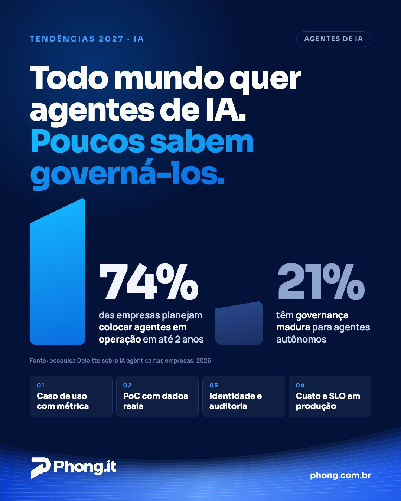

<title>Radar Phong Novembro 2026</title>
<meta name="claude:viewport-fit-sides" content="cover">
<link rel="preconnect" href="https://fonts.googleapis.com">
<link href="https://fonts.googleapis.com/css2?family=Sora:wght@500;600;700;800&family=Manrope:wght@400;500;600;700&display=swap" rel="stylesheet">
<style>
  /* Layout: faixa azul-noite da marca no topo, depois uma coluna de leitura com tabelas e a ferramenta de leads em largura total */
  :root {
    --bg: #f5f8fd; --card: #ffffff; --fg: #0b1a3d; --muted: #4d5b78; --border: #d9e2f0;
    --blue: #0a6fe0; --sky: #3aa0ff; --cyan: #14b8ff; --ice: #dbeaff; --ink: #031238;
    --hi: #e7f6ec; --hi-fg: #136b34; --mid: #fff4dc; --mid-fg: #8a5a00; --lo: #eef1f6; --lo-fg: #4d5b78;
    --display: "Sora", ui-sans-serif, system-ui, sans-serif;
    --text: "Manrope", ui-sans-serif, system-ui, sans-serif;
  }
  @media (prefers-color-scheme: dark) { :root:not([data-theme="light"]) {
    --bg: #04112e; --card: #0b1a3d; --fg: #eaf1fb; --muted: #9fb0d3; --border: #1f3466;
    --blue: #3aa0ff; --sky: #6cbaff; --ice: #12285a;
    --hi: #0f3a25; --hi-fg: #7fe0a4; --mid: #3d2e0c; --mid-fg: #f3c96b; --lo: #16264d; --lo-fg: #9fb0d3;
    color-scheme: dark; } }
  :root[data-theme="dark"] {
    --bg: #04112e; --card: #0b1a3d; --fg: #eaf1fb; --muted: #9fb0d3; --border: #1f3466;
    --blue: #3aa0ff; --sky: #6cbaff; --ice: #12285a;
    --hi: #0f3a25; --hi-fg: #7fe0a4; --mid: #3d2e0c; --mid-fg: #f3c96b; --lo: #16264d; --lo-fg: #9fb0d3;
    color-scheme: dark; }

  * { box-sizing: border-box; }
  body { background: var(--bg); color: var(--fg); font-family: var(--text); font-size: 16px; line-height: 1.6; }
  h1, h2, h3 { font-family: var(--display); letter-spacing: -0.02em; text-wrap: balance; line-height: 1.15; margin: 0; }
  p { margin: 0; }
  a { color: var(--blue); }
  .wrap { max-width: 1080px; margin: 0 auto; padding-left: max(16px, env(safe-area-inset-left, 0px)); padding-right: max(16px, env(safe-area-inset-right, 0px)); }

  /* Faixa da marca: sempre azul-noite */
  .band { background: #031238; color: #f2f6fc; position: relative; overflow: hidden; }
  .band .wrap { padding-block: 40px 56px; display: grid; gap: 22px; position: relative; z-index: 1; }
  .logo { width: 150px; height: 41.6px; background: url(logo.png) 0 0 / 100% 100% no-repeat; filter: url(#towhite); clip-path: inset(0 2px 2px 0); }
  .eyebrow { font-family: var(--display); font-size: 12px; font-weight: 600; letter-spacing: .18em; text-transform: uppercase; color: #3aa0ff; }
  .band h1 { font-size: clamp(30px, 5vw, 48px); font-weight: 800; max-width: 20ch; color: #fff; }
  .band h1 span { background: linear-gradient(135deg, #14b8ff, #0a6fe0); -webkit-background-clip: text; background-clip: text; color: transparent; }
  .band p.lead { color: #c4d1ec; max-width: 62ch; font-size: 17px; }
  .band canvas { position: absolute; left: 0; right: 0; bottom: 0; width: 100%; height: 90px; z-index: 0; }
  .nav { display: flex; flex-wrap: wrap; gap: 8px; }
  .nav a { color: #dbeaff; border: 1px solid #22396e; border-radius: 999px; padding: 6px 14px; font-size: 14px; font-weight: 600; text-decoration: none; }
  .nav a:hover, .nav a:focus-visible { border-color: #3aa0ff; outline: none; }

  main .wrap { padding-block: 48px 80px; display: grid; gap: 64px; }
  section { display: grid; gap: 20px; min-width: 0; }
  section > h2 { font-size: clamp(24px, 3.4vw, 32px); font-weight: 700; }
  .kicker { font-family: var(--display); font-size: 12px; font-weight: 600; letter-spacing: .18em; text-transform: uppercase; color: var(--blue); }
  .muted { color: var(--muted); }
  .prose { max-width: 68ch; display: grid; gap: 12px; }

  .summary { display: grid; grid-template-columns: repeat(auto-fit, minmax(240px, 1fr)); gap: 16px; }
  .summary div { background: var(--card); border: 1px solid var(--border); border-radius: 14px; padding: 20px; display: grid; gap: 6px; align-content: start; }
  .summary b { font-family: var(--display); font-size: 17px; }

  .scroll { overflow-x: auto; border: 1px solid var(--border); border-radius: 14px; background: var(--card); }
  table { border-collapse: collapse; width: 100%; font-size: 14.5px; }
  th, td { text-align: left; vertical-align: top; padding: 14px 16px; border-bottom: 1px solid var(--border); }
  th { font-family: var(--display); font-size: 12px; font-weight: 600; letter-spacing: .1em; text-transform: uppercase; color: var(--muted); white-space: nowrap; }
  tr:last-child td { border-bottom: 0; }
  td.t { font-family: var(--display); font-weight: 600; min-width: 180px; }
  td.e { min-width: 240px; color: var(--muted); }
  td.o { min-width: 240px; }
  .tag { display: inline-block; font-size: 12px; font-weight: 700; border-radius: 999px; padding: 2px 10px; background: var(--ice); color: var(--blue); margin: 0 4px 4px 0; white-space: nowrap; }
  .pri { display: inline-block; font-size: 12px; font-weight: 700; border-radius: 6px; padding: 3px 9px; white-space: nowrap; }
  .pri.a { background: var(--hi); color: var(--hi-fg); }
  .pri.b { background: var(--mid); color: var(--mid-fg); }
  .pri.c { background: var(--lo); color: var(--lo-fg); }

  /* Post */
  .post { display: grid; grid-template-columns: minmax(0, 1fr) minmax(0, 1fr); gap: 24px; align-items: start; }
  @media (max-width: 820px) { .post { grid-template-columns: 1fr; } }
  .post img { width: 100%; border-radius: 12px; border: 1px solid var(--border); display: block; }
  .copybox { background: var(--card); border: 1px solid var(--border); border-radius: 14px; display: grid; min-width: 0; }
  .copybox header { display: flex; justify-content: space-between; align-items: center; gap: 12px; padding: 12px 16px; border-bottom: 1px solid var(--border); }
  .copybox header b { font-family: var(--display); font-size: 14px; }
  .copybox pre { margin: 0; padding: 18px; white-space: pre-wrap; font-family: var(--text); font-size: 15px; line-height: 1.55; max-height: 620px; overflow: auto; }
  button { font-family: var(--display); font-weight: 600; font-size: 13px; border-radius: 8px; padding: 8px 14px; cursor: pointer; border: 1px solid var(--blue); background: var(--blue); color: #fff; }
  button.ghost { background: transparent; color: var(--blue); }
  button:focus-visible, select:focus-visible, input:focus-visible, label.drop:focus-within { outline: 2px solid var(--sky); outline-offset: 2px; }
  .tips { display: grid; grid-template-columns: repeat(auto-fit, minmax(220px, 1fr)); gap: 12px; }
  .tips div { border-left: 3px solid var(--blue); padding: 4px 0 4px 14px; display: grid; gap: 2px; }
  .tips b { font-family: var(--display); font-size: 15px; }
  .alts { display: grid; gap: 10px; }
  .alts div { background: var(--card); border: 1px solid var(--border); border-radius: 12px; padding: 14px 16px; display: grid; gap: 4px; }

  /* Leads */
  .icp { display: grid; grid-template-columns: repeat(auto-fit, minmax(280px, 1fr)); gap: 16px; }
  .icp > div { background: var(--card); border: 1px solid var(--border); border-radius: 14px; padding: 20px; display: grid; gap: 10px; align-content: start; }
  .icp h3 { font-size: 17px; }
  .icp ul { margin: 0; padding-left: 18px; display: grid; gap: 6px; }
  .tool { background: var(--card); border: 1px solid var(--border); border-radius: 16px; padding: 20px; display: grid; gap: 16px; min-width: 0; }
  .toolbar { display: flex; flex-wrap: wrap; gap: 10px; align-items: center; }
  label.drop { display: inline-flex; align-items: center; gap: 8px; border: 1.5px dashed var(--blue); border-radius: 10px; padding: 9px 14px; font-weight: 700; color: var(--blue); cursor: pointer; font-size: 14px; }
  label.drop input { position: absolute; width: 1px; height: 1px; opacity: 0; }
  select, input[type=search] { font: inherit; font-size: 14px; padding: 8px 10px; border-radius: 8px; border: 1px solid var(--border); background: var(--bg); color: var(--fg); }
  input[type=search] { min-width: 0; flex: 1 1 180px; }
  .status { font-size: 14px; color: var(--muted); }
  .status.sample { color: var(--mid-fg); background: var(--mid); border-radius: 8px; padding: 8px 12px; }
  .counts { display: flex; flex-wrap: wrap; gap: 10px; }
  .counts span { font-size: 14px; font-weight: 600; }
  .score { font-family: var(--display); font-weight: 700; font-variant-numeric: tabular-nums; }
  td.who { min-width: 170px; }
  td.who small { display: block; color: var(--muted); }
  td.why { min-width: 220px; color: var(--muted); font-size: 13.5px; }
  td.how { min-width: 220px; font-size: 13.5px; }
  .dm { display: grid; gap: 12px; }
  .dm div { background: var(--card); border: 1px solid var(--border); border-radius: 12px; padding: 16px; display: grid; gap: 6px; }
  .dm b { font-family: var(--display); font-size: 14px; color: var(--blue); }
  ol.steps { margin: 0; padding-left: 20px; display: grid; gap: 6px; max-width: 70ch; }
  .sources { font-size: 14px; display: grid; gap: 6px; padding-left: 18px; margin: 0; }
  footer { border-top: 1px solid var(--border); }
  footer .wrap { padding-block: 24px; font-size: 13px; color: var(--muted); }
  @media (prefers-reduced-motion: reduce) { * { scroll-behavior: auto !important; } }
</style>

<svg width="0" height="0" style="position:absolute" aria-hidden="true">
  <defs>
    <filter id="towhite" x="0" y="0" width="1" height="1" color-interpolation-filters="sRGB">
      <feColorMatrix type="matrix" values="0 0 0 0 1  0 0 0 0 1  0 0 0 0 1  -4 -4 -4 0 11.5"/>
    </filter>
  </defs>
</svg>

<header class="band">
  <canvas id="waves" aria-hidden="true"></canvas>
  <div class="wrap">
    <div class="logo" role="img" aria-label="Phong"></div>
    <span class="eyebrow">Radar de tendências · novembro 2026</span>
    <h1>A IA entrou no orçamento. <span>A operação ainda não.</span></h1>
    <p class="lead">Tendências de tecnologia para 2027 cruzadas com as três frentes da Phong (squads, IA aplicada e infraestrutura), um post pronto para o LinkedIn e um método para transformar conexões em conversas comerciais.</p>
    <nav class="nav" aria-label="Seções">
      <a href="#tendencias">Tendências × Phong</a>
      <a href="#post">Post do LinkedIn</a>
      <a href="#leads">Conexões e leads</a>
      <a href="#fontes">Fontes</a>
    </nav>
  </div>
</header>

<main>
<div class="wrap">

  <section aria-labelledby="h-resumo">
    <span class="kicker">Resumo</span>
    <h2 id="h-resumo">O que muda para a Phong</h2>
    <div class="summary">
      <div><b>A demanda por agentes é real</b><p class="muted">40% das empresas brasileiras já investem em agentes de IA e 33% vão começar em 12 meses (ABES/IDC 2026). O orçamento existe.</p></div>
      <div><b>O gargalo é tudo em volta do modelo</b><p class="muted">Governança, identidade, dados, custo e operação. É exatamente a interseção entre a frente de IA e a de infraestrutura da Phong.</p></div>
      <div><b>Talento continua escasso</b><p class="muted">O Brasil forma cerca de 53 mil profissionais de TI por ano para uma demanda de 159 mil (Brasscom). Squads alocados seguem com demanda estrutural.</p></div>
    </div>
    <p class="prose muted">Posicionamento recomendado para os próximos meses: <b style="color:var(--fg)">"tiramos a IA do piloto e colocamos em produção com governança"</b>. Ele usa o que a Phong já tem (Phong Lab, assessment de 2 a 4 semanas, SRE, FinOps e DevSecOps) e ataca a dor que o mercado inteiro está relatando.</p>
  </section>

  <section id="tendencias" aria-labelledby="h-tend">
    <span class="kicker">Análise</span>
    <h2 id="h-tend">Tendências cruzadas com o negócio</h2>
    <p class="prose muted">A prioridade combina três critérios: força da evidência, aderência ao que a Phong já entrega e facilidade de virar oferta vendável agora.</p>
    <div class="scroll">
      <table>
        <thead><tr><th>Tendência</th><th>Evidência</th><th>Frente Phong</th><th>Oferta ou ângulo comercial</th><th>Prioridade</th></tr></thead>
        <tbody>
          <tr>
            <td class="t">Agentes de IA saindo do piloto</td>
            <td class="e">Gartner 2027 põe a governança de plataformas de agentes como um dos três eixos. Deloitte: 74% planejam implantar em 2 anos, 21% têm governança madura.</td>
            <td><span class="tag">IA aplicada</span><span class="tag">Phong Lab</span></td>
            <td class="o">"Do piloto à produção": discovery + PoC com dados reais e critério de parada. Porta de entrada para squad.</td>
            <td><span class="pri a">Alta</span></td>
          </tr>
          <tr>
            <td class="t">Identidade e governança de agentes</td>
            <td class="e">Gartner recomenda trocar credenciais estáticas por acesso dinâmico baseado em política para agentes.</td>
            <td><span class="tag">IA aplicada</span><span class="tag">Segurança</span></td>
            <td class="o">Revisão de permissões, segredos e trilha de auditoria de agentes já existentes. Bom tema para CISOs e times de risco.</td>
            <td><span class="pri a">Alta</span></td>
          </tr>
          <tr>
            <td class="t">Dados e contexto prontos para IA</td>
            <td class="e">Gartner lista "AI context platforms". ABES aponta qualidade de dados e legado como entraves no Brasil.</td>
            <td><span class="tag">Dados e integrações</span><span class="tag">Legado</span></td>
            <td class="o">Modernização com strangler pattern e APIs como pré-requisito para IA. Usa o case de onboarding de 4 h para 5 min.</td>
            <td><span class="pri a">Alta</span></td>
          </tr>
          <tr>
            <td class="t">FinOps para IA</td>
            <td class="e">State of FinOps 2026: 98% gerenciam custo de IA (eram 31% em 2024); visibilidade é o desafio nº 1.</td>
            <td><span class="tag">Infra e cloud</span><span class="tag">FinOps</span></td>
            <td class="o">Assessment com estimativa de economia, agora incluindo custo por execução de modelos e agentes.</td>
            <td><span class="pri a">Alta</span></td>
          </tr>
          <tr>
            <td class="t">Escassez de talento sênior</td>
            <td class="e">Brasscom: 53 mil formados por ano contra 159 mil necessários; déficit grande em cibersegurança.</td>
            <td><span class="tag">Squads</span></td>
            <td class="o">Squad Dev + SRE + Tech Lead como alternativa a contratar. Mensagem de capacidade imediata.</td>
            <td><span class="pri a">Alta</span></td>
          </tr>
          <tr>
            <td class="t">Tecnologia soberana e saída de lock-in</td>
            <td class="e">Gartner 2027 define sovereign tech como opções realistas de saída de fornecedores críticos.</td>
            <td><span class="tag">Infra e cloud</span></td>
            <td class="o">Terraform multicloud (AWS, Azure, GCP) como apólice de portabilidade. Conversa para setores regulados.</td>
            <td><span class="pri b">Média</span></td>
          </tr>
          <tr>
            <td class="t">Remediação automática de vulnerabilidades</td>
            <td class="e">Gartner cita teste e aplicação automatizada de patches e remediação autônoma de exposição.</td>
            <td><span class="tag">DevSecOps</span></td>
            <td class="o">Pipeline com patch automatizado e rollback por GitOps. Bom conteúdo técnico, venda mais longa.</td>
            <td><span class="pri b">Média</span></td>
          </tr>
          <tr>
            <td class="t">Modelos quantitativos, voz e computação biológica</td>
            <td class="e">Também na lista do Gartner 2027, mas com adoção ainda distante para o porte dos clientes da Phong.</td>
            <td><span class="tag">Phong Lab</span></td>
            <td class="o">Acompanhar e testar no Lab. Usar como conteúdo de autoridade, não como oferta.</td>
            <td><span class="pri c">Observar</span></td>
          </tr>
        </tbody>
      </table>
    </div>
  </section>

  <section id="post" aria-labelledby="h-post">
    <span class="kicker">Conteúdo</span>
    <h2 id="h-post">Post do LinkedIn</h2>
    <p class="prose muted">Formato retrato 4:5 (1080 × 1350), que ocupa mais espaço no feed do celular. A arte usa o azul-noite, o gradiente, Sora e as ondas do manual de marca, e as barras do gráfico seguem o símbolo da Phong.</p>
    <div class="post">
      
      <div class="copybox">
        <header><b>Texto do post</b><button type="button" data-copy="postText">Copiar texto</button></header>
        <pre id="postText">74% das empresas planejam colocar agentes de IA em operação nos próximos dois anos.
Só 21% têm governança madura para isso.

No Brasil o movimento é parecido. Segundo a ABES/IDC, 40% das empresas já investem em agentes e outras 33% vão começar em até 12 meses. E o elo mais fraco continua sendo medir o retorno.

O Gartner colocou a governança de plataformas de agentes autônomos entre os três eixos das tendências estratégicas para 2027. Na prática, o que separa um piloto de um agente em produção quase nunca é o modelo. É o que está em volta dele:

→ Um caso de uso com métrica de negócio definida antes da primeira linha de código
→ Dados e contexto confiáveis, e não planilhas soltas e um legado sem API
→ Identidade própria para o agente, com permissão mínima e trilha de auditoria
→ Custo por execução acompanhado de perto (quase todo time de FinOps já gerencia gasto com IA, e visibilidade ainda é o maior desafio)
→ SLO, monitoramento e alguém de plantão quando ele erra

É engenharia, infraestrutura e governança. A parte menos glamourosa da IA, e a que decide se ela gera resultado.

Na Phong a gente começa pelo caminho oposto ao do hype: uma PoC com dados reais, uma métrica combinada e uma regra simples. Se o resultado não vier, o piloto para.

E na sua empresa: quantos pilotos de IA viraram operação de verdade em 2026?

#InteligenciaArtificial #AgentesDeIA #GovernancaDeIA #FinOps #Tecnologia</pre>
      </div>
    </div>

    <div class="copybox">
      <header><b>Primeiro comentário (publique logo após o post)</b><button type="button" class="ghost" data-copy="firstComment">Copiar</button></header>
      <pre id="firstComment">Para quem quer sair do piloto: fazemos um assessment de 2 a 4 semanas que mapeia casos de uso de IA, riscos de segurança e custo de nuvem, e entrega um plano priorizado. Mais em phong.com.br</pre>
    </div>

    <h3 style="font-size:18px">Para maximizar o engajamento</h3>
    <div class="tips">
      <div><b>Link fora do corpo</b><p class="muted">O link vai no primeiro comentário. Posts com link externo no texto costumam ter menos alcance.</p></div>
      <div><b>Terça a quinta, 8h às 10h</b><p class="muted">Horário em que decisores B2B costumam abrir o LinkedIn. Teste e compare com o histórico da página.</p></div>
      <div><b>Primeira hora ativa</b><p class="muted">Responda todo comentário em até 60 minutos com uma pergunta de volta. Isso prolonga a distribuição.</p></div>
      <div><b>Publicar pelo perfil pessoal também</b><p class="muted">Sócios repostam com uma frase própria. Perfil pessoal alcança mais que a página da empresa.</p></div>
    </div>

    <h3 style="font-size:18px">Ganchos alternativos para teste A/B ou próximos posts</h3>
    <div class="alts">
      <div><b>Identidade de agentes</b><p class="muted">"Seu agente de IA tem crachá? Se ele acessa o ERP com a senha de um usuário humano, você tem um risco de segurança, não um projeto de IA."</p></div>
      <div><b>FinOps de IA</b><p class="muted">"Em 2024, 31% dos times de FinOps gerenciavam custo de IA. Em 2026, 98%. Você sabe quanto custa cada execução do seu agente?"</p></div>
      <div><b>Talento e squads</b><p class="muted">"O Brasil forma 53 mil profissionais de TI por ano. O mercado precisa de 159 mil. Seu roadmap de 2027 conta com quem?"</p></div>
    </div>
  </section>

  <section id="leads" aria-labelledby="h-leads">
    <span class="kicker">Prospecção</span>
    <h2 id="h-leads">Conexões que podem virar leads</h2>
    <p class="prose muted">Esta análise usa o perfil de cliente ideal (ICP) da Phong e sinais de intenção ligados às tendências acima. Para aplicá-la às suas conexões reais, exporte a lista do LinkedIn e carregue o arquivo na ferramenta abaixo. Os dados são lidos só no seu navegador e não são enviados a lugar nenhum.</p>

    <div class="icp">
      <div>
        <h3>Quem decide</h3>
        <ul>
          <li><b>CTO, CIO, VP ou Head de Engenharia/Tecnologia:</b> compra squad e assessment</li>
          <li><b>Head de Dados, IA ou Inovação:</b> dono do piloto de IA travado</li>
          <li><b>Head de Infra, Plataforma ou SRE:</b> dor com custo, release e disponibilidade</li>
          <li><b>CEO ou sócio de empresa de tecnologia em crescimento:</b> precisa de capacidade rápida</li>
        </ul>
      </div>
      <div>
        <h3>Onde a Phong tem prova</h3>
        <ul>
          <li><b>Financeiro, fintech, crédito e seguros:</b> case de onboarding e validação de crédito; setor que mais investe em software no Brasil segundo a ABES</li>
          <li><b>Empresas com legado on-premises ou Azure:</b> case de rede híbrida e zero downtime</li>
          <li><b>SaaS e scale-ups:</b> roadmap maior que o time</li>
          <li>Porte sugerido: 100 a 2.000 funcionários</li>
        </ul>
      </div>
      <div>
        <h3>Sinais de intenção para observar</h3>
        <ul>
          <li>Vaga aberta de dev sênior, SRE ou dados há mais de 30 dias</li>
          <li>Post sobre piloto de IA, custo de nuvem ou migração</li>
          <li>Novo CTO ou Head nos últimos 6 meses (fase de diagnóstico)</li>
          <li>Rodada de investimento ou expansão anunciada</li>
          <li>Curtiu ou comentou o post deste radar</li>
        </ul>
      </div>
      <div>
        <h3>Parceiros, não clientes</h3>
        <ul>
          <li><b>Software houses de porte parecido</b> (por exemplo Plathanus, Ateliware): subcontratação em picos de demanda</li>
          <li><b>Gerentes de parceiros AWS, Azure e GCP:</b> indicação de clientes</li>
          <li><b>Consultorias de ERP, dados e negócios:</b> complementam a oferta sem competir</li>
        </ul>
      </div>
    </div>

    <h3 style="font-size:18px">Pontuação de conexões</h3>
    <div class="tool" aria-live="polite">
      <div class="toolbar">
        <label class="drop" for="csv">Carregar Connections.csv<input type="file" id="csv" accept=".csv,text/csv"></label>
        <button type="button" class="ghost" id="reset">Voltar ao exemplo</button>
        <select id="tier" aria-label="Filtrar por faixa">
          <option value="all">Todas as faixas</option>
          <option value="A">Faixa A</option>
          <option value="B">Faixa B</option>
          <option value="C">Faixa C</option>
          <option value="P">Parceiros</option>
        </select>
        <input type="search" id="q" placeholder="Buscar por nome, empresa ou cargo" aria-label="Buscar">
        <button type="button" id="copyCsv">Copiar resultado (CSV)</button>
      </div>
      <p class="status sample" id="status">Mostrando conexões de exemplo, fictícias. Carregue o seu arquivo para ver as suas.</p>
      <div class="counts" id="counts"></div>
      <div class="scroll">
        <table>
          <thead><tr><th>Pontos</th><th>Faixa</th><th>Conexão</th><th>Por que</th><th>Abordagem sugerida</th></tr></thead>
          <tbody id="rows"></tbody>
        </table>
      </div>
      <p class="muted" style="font-size:13.5px">Critérios: cargo de decisão (até 40), área ligada a uma frente da Phong (até 20), setor com case (até 20), conexão recente (10). Nível júnior, estágio e estudante perdem pontos. Empresas de software, outsourcing e consultoria viram "Parceiro". Faixa A a partir de 60 pontos, B de 35 a 59.</p>
    </div>

    <h3 style="font-size:18px">Como exportar suas conexões</h3>
    <ol class="steps">
      <li>No LinkedIn, abra <b>Configurações e privacidade</b> e depois <b>Privacidade de dados</b>.</li>
      <li>Clique em <b>Obter uma cópia dos seus dados</b>, marque só <b>Conexões</b> e solicite.</li>
      <li>O LinkedIn envia o arquivo em cerca de 10 minutos. Descompacte e carregue o <b>Connections.csv</b> aqui.</li>
      <li>A exportação traz nome, empresa, cargo e data de conexão. E-mail só aparece quando a pessoa permite.</li>
    </ol>

    <h3 style="font-size:18px">Sequência de mensagens para quem engajar no post</h3>
    <div class="dm">
      <div><b>1. Logo após o comentário ou reação</b><p>"Oi, {nome}! Obrigado por comentar sobre agentes de IA. Fiquei curioso: na {empresa} vocês já têm algum agente em produção ou ainda estão na fase de piloto?"</p></div>
      <div><b>2. Se responder, entregue algo útil antes de vender</b><p>"Faz sentido. A gente montou um checklist de 5 pontos que revisamos antes de colocar um agente em produção (métrica, dados, identidade, custo e operação). Posso te mandar?"</p></div>
      <div><b>3. Convite, só depois da troca</b><p>"Se for útil, posso fazer 30 minutos com você para olhar um caso de uso específico. Você sai com um plano priorizado, sem compromisso de contratar."</p></div>
    </div>
    <p class="muted prose">Para faixa A sem engajamento, comente com conteúdo nos posts da pessoa por uma ou duas semanas antes da primeira mensagem. Limite-se a 15 ou 20 abordagens por semana, todas personalizadas.</p>
  </section>

  <section id="fontes" aria-labelledby="h-fontes">
    <span class="kicker">Referências</span>
    <h2 id="h-fontes">Fontes</h2>
    <ul class="sources">
      <li><a href="https://www.gartner.com/en/newsroom/press-releases/2026-10-20-gartner-identifies-the-top-strategic-technology-trends-for-2027">Gartner: Top Strategic Technology Trends for 2027</a></li>
      <li><a href="https://itbrief.co.uk/story/gartner-flags-10-tech-trends-for-2027-as-ai-governance">IT Brief: tendências Gartner 2027 e governança de IA</a></li>
      <li><a href="https://www.networkworld.com/article/4238030/gartners-top-tech-trends-for-2027-expand-and-accelerate.html">Network World: Gartner's top tech trends for 2027</a></li>
      <li><a href="https://convergenciadigital.com.br/mercado/agentes-ia-vao-receber-mais-de-r-34-bilhoes-e-entram-no-top-3-de-investimentos-em-ti-no-brasil/">Convergência Digital: agentes de IA no top 3 de investimentos (ABES/IDC)</a></li>
      <li><a href="https://abes.org.br/setor-financeiro-lidera-investimentos-em-software-e-servicos-no-brasil-aponta-estudo-da-abes/">ABES: setor financeiro lidera investimentos em software</a></li>
      <li><a href="https://tiinside.com.br/10/07/2026/agentes-de-ia-o-brasil-acelera-mas-ainda-nao-sabe-medir-o-retorno/">TI Inside: o Brasil acelera agentes mas não sabe medir o retorno</a></li>
      <li><a href="https://www.marketscale.com/industries/software-and-technology/enterprise-ai-moves-from-pilot-to-production-in-2026-but-gaps-in-governance-and-talent-persist.md">MarketScale: IA do piloto à produção em 2026 (dados Deloitte)</a></li>
      <li><a href="https://www.usu.com/en/blog/6-takeaways-from-the-state-of-finops-report-2026">USU: 6 conclusões do State of FinOps 2026</a></li>
      <li><a href="https://www.bemparana.com.br/noticias/economia/brasil-forma-53-mil-profissionais-em-ti-por-ano-mas-mercado-precisa-de-159-mil/">Bem Paraná: Brasil forma 53 mil profissionais de TI por ano (Brasscom)</a></li>
    </ul>
    <p class="muted prose" style="font-size:14px">Os números da Deloitte e do State of FinOps vieram de resumos da imprensa especializada. Confira o relatório original antes de usar os dados em material comercial formal.</p>
  </section>

</div>
</main>
<footer><div class="wrap">Phong · Squads, IA e infraestrutura para empresas · phong.com.br</div></footer>

<script>
(function () {
  // Ondas de profundidade do manual de marca, desenhadas em canvas
  const c = document.getElementById('waves');
  function draw() {
    const r = window.devicePixelRatio || 1, w = c.clientWidth, h = c.clientHeight;
    c.width = w * r; c.height = h * r;
    const x = c.getContext('2d'); x.scale(r, r);
    const g = x.createLinearGradient(0, 0, w, 0);
    g.addColorStop(0, '#0a3fd8'); g.addColorStop(.5, '#5f9bff'); g.addColorStop(1, '#1f5cf0');
    const n = 10;
    for (let i = 0; i < n; i++) {
      const t = i / (n - 1);
      x.beginPath();
      x.moveTo(0, h * (0.35 + 0.6 * t));
      x.quadraticCurveTo(w / 2, h * (0.9 - 0.1 * t), w, h * (0.15 + 0.7 * t));
      x.lineTo(w, h); x.lineTo(0, h); x.closePath();
      x.globalAlpha = 0.08 + 0.3 * t; x.fillStyle = g; x.fill();
      x.globalAlpha = 0.25; x.strokeStyle = '#ffffff'; x.lineWidth = 1; x.stroke();
    }
  }
  draw(); window.addEventListener('resize', draw);

  // Copiar textos
  async function copyText(text, btn) {
    const old = btn.textContent;
    try { await navigator.clipboard.writeText(text); btn.textContent = 'Copiado'; }
    catch (e) { btn.textContent = 'Selecione e copie'; }
    setTimeout(() => { btn.textContent = old; }, 1800);
  }
  document.querySelectorAll('[data-copy]').forEach(b => b.addEventListener('click', () => {
    const el = document.getElementById(b.dataset.copy);
    copyText(el.textContent, b);
    const sel = window.getSelection(), rg = document.createRange(); rg.selectNodeContents(el); sel.removeAllRanges(); sel.addRange(rg);
  }));

  // ---------- Pontuação de conexões ----------
  const norm = s => (s || '').toString().toLowerCase().normalize('NFD').replace(/[̀-ͯ]/g, '');
  const has = (s, list) => list.some(k => new RegExp('(^|[^a-z])' + k + '([^a-z]|$)').test(s));

  const DECISOR = ['cto', 'cio', 'ciso', 'cdo', 'vp', 'vice[- ]presidente', 'head', 'diretor', 'diretora', 'director', 'chief', 'superintendente', 'founder', 'co-?founder', 'fundador', 'fundadora', 'socio', 'socia', 'partner', 'ceo', 'coo', 'owner'];
  const INFLU = ['gerente', 'manager', 'coordenador', 'coordenadora', 'lider', 'lead', 'tech lead', 'arquiteto', 'arquiteta', 'architect', 'staff', 'principal', 'especialista', 'specialist'];
  const JUNIOR = ['estagiario', 'estagiaria', 'intern', 'estudante', 'student', 'trainee', 'junior', 'jr', 'aprendiz'];
  const RH = ['recrutador', 'recrutadora', 'recruiter', 'talent', 'talentos', 'tech recruiter'];
  const AREA = {
    ia: { label: 'IA aplicada', k: ['ia', 'ai', 'dados', 'data', 'ml', 'machine learning', 'analytics', 'inovacao', 'innovation', 'bi', 'genai'] },
    infra: { label: 'Infra e cloud', k: ['infra', 'infraestrutura', 'infrastructure', 'cloud', 'sre', 'devops', 'plataforma', 'platform', 'seguranca', 'security', 'finops', 'ti', 'it', 'operacoes de ti'] },
    squads: { label: 'Squads', k: ['tecnologia', 'technology', 'engenharia', 'engineering', 'desenvolvimento', 'development', 'software', 'produto', 'product', 'sistemas', 'digital'] }
  };
  const FIN = ['banco', 'bank', 'fintech', 'pay', 'pagamentos', 'payments', 'credito', 'credit', 'seguros', 'seguradora', 'insurance', 'invest', 'investimentos', 'capital', 'financeira', 'cooperativa', 'sicredi', 'sicoob', 'consorcio'];
  const SETOR = ['saude', 'health', 'hospital', 'varejo', 'retail', 'logistica', 'logistics', 'industria', 'industrial', 'energia', 'energy', 'agro', 'educacao', 'saas', 'telecom', 'ecommerce', 'e-commerce'];
  const PARCEIRO = ['software house', 'outsourcing', 'consultoria', 'consulting', 'fabrica de software', 'solucoes em ti', 'it solutions', 'it services', 'tecnologia ltda'];

  function score(p) {
    const pos = norm(p.position), comp = norm(p.company), why = [];
    let pts = 0, area = null;
    if (has(pos, JUNIOR)) { pts -= 30; why.push('nível júnior ou estudante'); }
    if (has(pos, DECISOR)) { pts += 40; why.push('cargo de decisão'); }
    else if (has(pos, INFLU)) { pts += 25; why.push('influencia a compra'); }
    else if (has(pos, RH)) { pts += 10; why.push('RH de tecnologia, pode sinalizar contratação'); }
    for (const id of ['ia', 'infra', 'squads']) { if (has(pos, AREA[id].k)) { area = id; break; } }
    if (area) { pts += 20; why.push('área: ' + AREA[area].label); }
    if (has(comp, FIN)) { pts += 20; why.push('setor financeiro, com case'); }
    else if (has(comp, SETOR)) { pts += 10; why.push('setor com demanda de modernização'); }
    if (p.connected) {
      const d = new Date(p.connected);
      if (!isNaN(d) && (Date.now() - d.getTime()) < 365 * 864e5) { pts += 10; why.push('conexão recente'); }
    }
    const partner = has(comp, PARCEIRO) || has(pos, ['consultor', 'consultora', 'consultant']) && has(comp, ['consultoria', 'consulting']);
    pts = Math.max(0, Math.min(100, pts));
    let tier = pts >= 60 ? 'A' : pts >= 35 ? 'B' : 'C';
    if (partner) tier = 'P';
    return { pts, tier, why: why.join(' · ') || 'poucos sinais no cargo', how: approach(tier, area, has(comp, FIN)) };
  }

  function approach(tier, area, fin) {
    if (tier === 'P') return 'Parceria: propor subcontratação em picos ou indicação cruzada.';
    if (tier === 'C') return 'Nutrir com conteúdo. Sem abordagem direta por enquanto.';
    const byArea = {
      ia: 'Enviar o post de agentes e perguntar se já há agente em produção. Oferta: PoC no Phong Lab.',
      infra: 'Ângulo FinOps de IA e custo de nuvem. Oferta: assessment de 2 a 4 semanas.',
      squads: 'Ângulo de capacidade e talento. Oferta: squad Dev + SRE + Tech Lead.'
    };
    let s = byArea[area] || 'Começar pelo post de agentes e descobrir a prioridade de 2027.';
    if (fin) s += ' Citar o case de onboarding (4 h para 5 min).';
    if (tier === 'B') s = 'Engajar nos posts antes. Depois: ' + s.charAt(0).toLowerCase() + s.slice(1);
    return s;
  }

  // Exemplos fictícios para mostrar a ferramenta funcionando
  const SAMPLE = [
    { first: 'Exemplo', last: 'Ana', company: 'Banco Exemplo S.A.', position: 'Head de Engenharia de Dados', connected: daysAgo(90) },
    { first: 'Exemplo', last: 'Bruno', company: 'Fintech Exemplo Pagamentos', position: 'CTO', connected: daysAgo(500) },
    { first: 'Exemplo', last: 'Carla', company: 'Rede Varejo Exemplo', position: 'Gerente de Infraestrutura e Cloud', connected: daysAgo(40) },
    { first: 'Exemplo', last: 'Diego', company: 'SaaS Exemplo', position: 'Engineering Manager', connected: daysAgo(800) },
    { first: 'Exemplo', last: 'Elisa', company: 'Exemplo Software House', position: 'Sócia-diretora', connected: daysAgo(200) },
    { first: 'Exemplo', last: 'Fábio', company: 'Hospital Exemplo', position: 'Coordenador de TI', connected: daysAgo(1200) },
    { first: 'Exemplo', last: 'Gabi', company: 'Indústria Exemplo', position: 'Tech Recruiter', connected: daysAgo(30) },
    { first: 'Exemplo', last: 'Hugo', company: 'Universidade Exemplo', position: 'Estudante de Engenharia', connected: daysAgo(20) }
  ];
  function daysAgo(n) { return new Date(Date.now() - n * 864e5).toISOString().slice(0, 10); }

  let data = [], isSample = true;

  function parseCSV(text) {
    const rows = []; let row = [], f = '', q = false;
    for (let i = 0; i < text.length; i++) {
      const ch = text[i];
      if (q) {
        if (ch === '"') { if (text[i + 1] === '"') { f += '"'; i++; } else q = false; }
        else f += ch;
      } else if (ch === '"') q = true;
      else if (ch === ',') { row.push(f); f = ''; }
      else if (ch === '\n' || ch === '\r') {
        if (ch === '\r' && text[i + 1] === '\n') i++;
        row.push(f); rows.push(row); row = []; f = '';
      } else f += ch;
    }
    if (f || row.length) { row.push(f); rows.push(row); }
    return rows;
  }

  function fromLinkedIn(text) {
    const rows = parseCSV(text.replace(/^/, ''));
    const hi = rows.findIndex(r => r.some(c => /first name|nome/i.test(c)) && r.some(c => /company|empresa/i.test(c)));
    if (hi < 0) throw new Error('header');
    const h = rows[hi].map(c => norm(c).trim());
    const col = (...names) => h.findIndex(c => names.some(n => c === n || c.startsWith(n)));
    const ix = { first: col('first name', 'nome'), last: col('last name', 'sobrenome'), url: col('url'), company: col('company', 'empresa'), position: col('position', 'cargo'), connected: col('connected on', 'conectado em') };
    return rows.slice(hi + 1).filter(r => r.length > 1 && r.join('').trim()).map(r => ({
      first: r[ix.first] || '', last: ix.last >= 0 ? r[ix.last] || '' : '', url: ix.url >= 0 ? r[ix.url] || '' : '',
      company: r[ix.company] || '', position: ix.position >= 0 ? r[ix.position] || '' : '', connected: ix.connected >= 0 ? r[ix.connected] || '' : ''
    }));
  }

  function load(list, sample) {
    data = list.map(p => Object.assign({}, p, score(p))).sort((a, b) => b.pts - a.pts);
    isSample = sample; render();
  }

  const $ = id => document.getElementById(id);
  const TIER = { A: ['a', 'A'], B: ['b', 'B'], C: ['c', 'C'], P: ['b', 'Parceiro'] };
  function esc(s) { return (s || '').replace(/[&<>"']/g, c => ({ '&': '&amp;', '<': '&lt;', '>': '&gt;', '"': '&quot;', "'": '&#39;' }[c])); }

  function filtered() {
    const t = $('tier').value, q = norm($('q').value);
    return data.filter(p => (t === 'all' || p.tier === t) && (!q || norm([p.first, p.last, p.company, p.position].join(' ')).includes(q)));
  }

  function render() {
    const list = filtered();
    const c = { A: 0, B: 0, C: 0, P: 0 }; data.forEach(p => c[p.tier]++);
    $('counts').innerHTML = ['A', 'B', 'P', 'C'].map(k => '<span class="pri ' + TIER[k][0] + '">' + (k === 'P' ? 'Parceiros' : 'Faixa ' + k) + ': ' + c[k] + '</span>').join('');
    const shown = list.slice(0, 300);
    $('rows').innerHTML = shown.map(p => {
      const name = esc((p.first + ' ' + p.last).trim());
      const link = p.url ? '<a href="' + esc(p.url) + '" target="_blank" rel="noopener">' + name + '</a>' : name;
      return '<tr><td class="score">' + p.pts + '</td><td><span class="pri ' + TIER[p.tier][0] + '">' + TIER[p.tier][1] + '</span></td>' +
        '<td class="who">' + link + '<small>' + esc(p.position) + (p.company ? ' · ' + esc(p.company) : '') + '</small></td>' +
        '<td class="why">' + esc(p.why) + '</td><td class="how">' + esc(p.how) + '</td></tr>';
    }).join('') || '<tr><td colspan="5" class="muted">Nenhuma conexão com esse filtro.</td></tr>';
    const st = $('status');
    st.className = 'status' + (isSample ? ' sample' : '');
    st.textContent = isSample
      ? 'Mostrando conexões de exemplo, fictícias. Carregue o seu arquivo para ver as suas.'
      : data.length + ' conexões pontuadas no seu navegador.' + (list.length > 300 ? ' Mostrando as 300 primeiras do filtro; use a busca para refinar.' : '');
  }

  $('csv').addEventListener('change', e => {
    const file = e.target.files[0]; if (!file) return;
    const rd = new FileReader();
    rd.onload = () => {
      try {
        const list = fromLinkedIn(rd.result);
        if (!list.length) throw new Error('empty');
        load(list, false);
      } catch (err) {
        const st = $('status'); st.className = 'status sample';
        st.textContent = 'Não reconheci esse arquivo. Use o Connections.csv da exportação do LinkedIn, com as colunas First Name, Company e Position.';
      }
    };
    rd.readAsText(file);
  });
  $('reset').addEventListener('click', () => { $('csv').value = ''; load(SAMPLE, true); });
  $('tier').addEventListener('change', render);
  $('q').addEventListener('input', render);
  $('copyCsv').addEventListener('click', e => {
    const q = v => '"' + String(v || '').replace(/"/g, '""') + '"';
    const lines = [['Pontos', 'Faixa', 'Nome', 'Cargo', 'Empresa', 'URL', 'Motivos', 'Abordagem'].map(q).join(',')]
      .concat(filtered().map(p => [p.pts, TIER[p.tier][1], (p.first + ' ' + p.last).trim(), p.position, p.company, p.url, p.why, p.how].map(q).join(',')));
    copyText(lines.join('\n'), e.currentTarget);
  });

  load(SAMPLE, true);
})();
</script>
